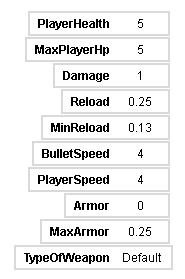

Roguelike
It's my own game on roguelike genre.
Controls: WASD or ↑←↓→ to move, mouse click or space to shot.
So you want to play the game?
Go, insert the coin.
(P.S game working stable on chrome, edge and others(maybe), except for firefox - fps is lower and appearing some artifacts.)
(P.S.S if you don't like game size, resize by ctrl + or ctrl -)
The game will be in white background.
And will be show the stats of yuo(you).

So let's find out what does they all mean.
- PlayerHealth - Your health. Can be added to maximum by heal drops - healthpack and medkit.
- MaxPlayerHp - Maximum of your health. So you can't overheal from healing drops.
- Damage - Your damage on bullets. Can be reduced by reload drop.
- Reload - Your attack reload. Can be added(means making attack will be less often) by damage drop.
- MinReload - Minimum reload of your attack. Can't be changed while playing the game, but it can changed from weapon drops.
- BulletSpeed - Bullet speed of your attack.Can be added from bullet speed drops.
- PlayerSpeed - Your movement. Can be reduced from armor drops.
- Armor - Your armor. Can be reduced from movement drops.
- MaxArmor - Maximum of your armor. Can be added from reaching limits of your stats.
- TypeOfWeapon - Weapon type. On starting it's default.
The game was made in Turbowarp with extensions.
Install the source code(File will be in sb3 format, open Turbowarp to work with.)
Music i've used for game:
- Secunda - Jeremy Soule (for Skyrim)
- Misantrop - Blod Besvimelse
- Outside Interference - corru works (for corru.observer)
- Hostile Rewrite - corru works (for corru.observer)
- War Without Reason - Heaven Pierce her (for Ultrakill)
- Ultimate Battle - Laura Shigihara (for PvZ)